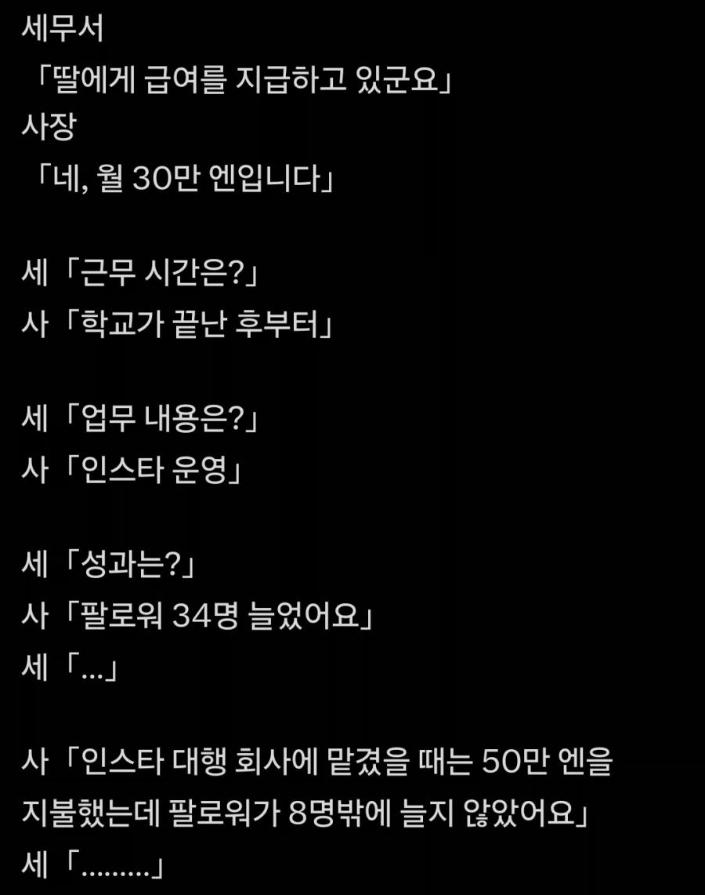

딸을 이용해 탈세하는거 아닙니까?
댓글
니가 그걸 망쳤어!
눈치 없는 녀석!
근데 대행업체는 사업자고 딸은 사업자가 아닌데 저렇게 말한다고 세무서가 ㅇㅋ 해주려나?
직원이잖아
한국에선 저렇게하면 급여 경비처리 어려움
근데 회사직원으로는 많이 하잖아? 회사 차려야만하는건가?
한국은 좀 양아치라서 그런거없음
탈세하는놈들이 뉴스에떠서 그렇지
한국 세무서도 양아치짓 존나많이함
사업자등록만 잘해서하면 문제없을것 같은데


대행업체는 용역비고 딸 직고용은 급여인데
너 t야!
시가보다 싸면 부당행위로 안볼려나
8명이면 대행회사 직원들이 팔로잉했네
와.. 전문업체 거의 절반 가격인데 효과는 4배라고!?
러키비키잖아!!!
34만명인줄알고
재능충이시네 뭘 올린거야 했는데 ㅋㅋㅋ
그거나 그거나
증여세 피하기 용도인가?
아니 저건 아부지도 처벌받고
업체는 화염병 처먹어야지 ㅋㅋㅋㅋㅋ
그 딸이 아니구나
무댓 개드립 ㄷㄷ